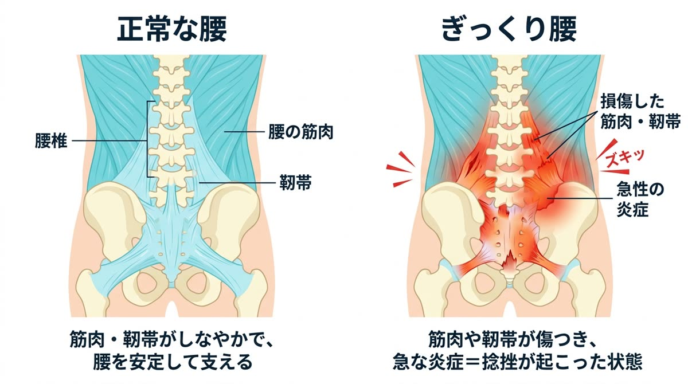

欧米で「魔女の一撃」と呼ばれる突然の激痛。最初の対処を間違えると回復が大きく遅れます。今つらい方は、まずお電話ください。
ぎっくり腰は「正しく・早く」対処できるかで回復スピードが大きく変わります。当院は急性のケガとして健康保険での施術にも対応しています。
ぎっくり腰の正体は、腰まわりの筋肉・靭帯・関節に起きた急性の捻挫（炎症）です。「重い物を持った瞬間に」というイメージがありますが、実際にはくしゃみ・靴下を履く・顔を洗うなど、ごく日常的な動きで発症する方が少なくありません。
なぜ何でもない動きで腰が壊れるのか。それは、発症のずっと前から疲労と歪みの「貯金」が溜まっていたからです。骨盤の歪みで一部の筋肉に負担が集中し、硬く緊張した状態が続く。そこに少しの負荷が加わった瞬間、限界を超えて炎症が起きる——ぎっくり腰は「突然」ではなく、時間をかけて準備されていた結果なのです。


急性期（発症〜数日）は、炎症を抑えて痛みを最短で落ち着かせることが最優先。当院では状態に合わせて、患部に負担をかけないソフトな施術で回復を促します。
そして痛みが落ち着いたら、ここからが本番です。ぎっくり腰を起こした身体の歪み・筋肉の使い方そのものを骨盤矯正で整え、「次」が起きない身体をつくります。

発症した状況・痛みの場所と強さを確認します。動けないほどつらい場合は、無理のない体勢のままお話を伺いますのでご安心ください。

炎症の程度と動きの制限をチェックし、今日やるべきこと・やってはいけないことを明確にお伝えします。

急性期はソフトな施術で炎症の回復を促進。痛みの経過に合わせて骨盤矯正へ移行し、再発しない身体づくりまで伴走します。
はい。ぎっくり腰は「急性の腰の捻挫」にあたるため、健康保険を使って施術を受けられるケースが多いです。受付時に保険証をご持参ください。
無理に動かず、痛みが少ない姿勢（横向きで軽く膝を曲げる等）で安静にし、最初の1〜2日は冷やすのが基本です。温める・強くもむ・無理なストレッチは悪化の原因になるため避け、できるだけ早めにご来院ください。
痛み自体は1〜2週間で落ち着くことが多いですが、原因が残ったままだと高い確率で再発します。痛みが引いた後の再発予防ケアまで行うことをおすすめします。